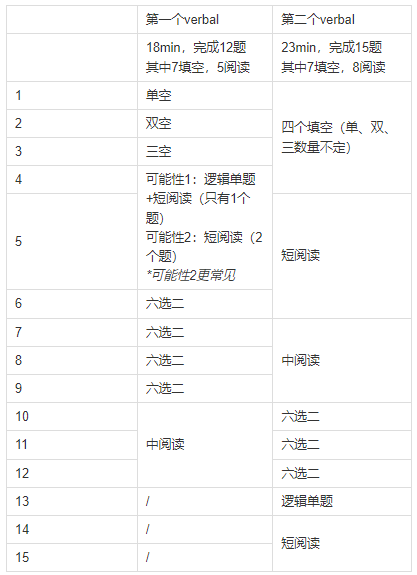
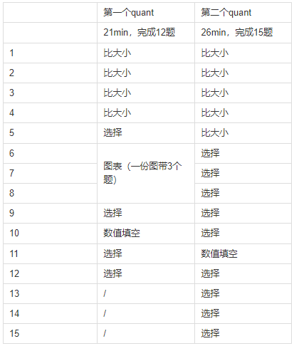

2023年9月22日起GRE改为精简版本，从原本要考将近4个小时改为2小时结束考试。本次改革只减少题量、去掉加试、去掉作文argument题型，其余内容没有任何变化。
因此GRE的备考策略不变、方法论不变、考试时间分配策略也不变。
新版GRE考试大概需要2小时，一共会碰到5个section，流程如下：
作文，写一篇issue，一共30min
第一个verbal，做12题(7题填空5题阅读)，一共18min
第一个quant，做12题，一共21min
第二个verbal，做15题(7题填空8题阅读)，一共23min
第二个quant，做15题，一共26min
Verbal出题情况概览：

Quant出题情况概览：

GRE的机考是自适应考试。第一个Section永远是Medium Mode，它的正确率会决定第二个同类型Section是进入到Easy，Medium，还是Hard Mode。
简单说，第一个section做对的越多，第二个section会越难。第二个Section越难越有利于出分。
根据目前信息总结的正确个数和自适应难度关系如下：
| Verbal-S1的正确个数 | Verbal-S2的难度系数 |
|---|---|
| 0-4个 | Easy |
| 5-8个 | Medium |
| 9-12个 | Hard |
ETS从来没有公开过算分算法，算分方式都是GRE老师们按照大量学生反推得到的，因此目前还没有新版GRE的算分算法。
但根据新版GRE的改革策略（只减少题量，其他啥都不变），且结合目前报分的同学的情况，正确率和分数对应关系不变。
以下E=Easy, M=Medium, H=Hard
Verbal：
150：M+M，平均正确率43%；或M+E，平均正确率60%
155：M+M，平均正确率60%；或M+H，平均正确率50%
160：M+H，平均正确率65%；或M+M，平均正确率73%
Quant：
M+H难度，每错一题扣1-2分；按目前获得的数据来看，扣分可能开始和难度挂钩，有同学报告错两题169，也有同学报告错两题166
算分模型会按大家的报分来建模~目前看由于题量减少后数学粗心扣分很狠+verbal正确率不稳定，改革后大家获得320比以前略容易，但要获得325+的分数比以前略难。不过如果数学好，恭喜，获得目标分会比以前更容易！
首先要厘清一个概念，9.22改革后的GRE考试变成精简版了，但这并不意味着的做题时间变宽裕了。虽然改革后题量减少，但总做题时间也一并减少了，因此每题平均做题时间并没有增多，和改革前基本持平。
| 填空类型 | 所需时间（含读题和做题） |
|---|---|
| 单空 | 30-45s |
| 双空 | 60-90s |
| 三空 | 90-135s |
| 六选二 | 30-45s |
| 阅读类型 | 时间分配 |
|---|---|
| 短阅读 | 只有1个题的情况：3分钟 有两个题的情况：4-4.5分钟 |
| 中阅读 | 3个题：6-7分钟 |
| 逻辑单题 | 1个题：2分钟 |
| 阅读类型 | 时间分配 |
|---|---|
| 7个填空题S1 | 约7min |
| 5个阅读题S1 | 约11min |
| 7个填空题S2 | 约7min |
| 8个阅读题S2 | 约16min |
不过，实操层面上，GRE的verbal一向是大部分人都做不完的。甚至总分330+的同学很多也没有做完全部verbal题目。
因此在握方法论，开始刷题时，需要学会合理分配时间，对大部分人来说，其原则就是：在有限时间里把能做对的简单/中等题做对，把难题留到最后做或者蒙。
所以常见策略是：把难题，如三空、逻辑单题、中阅读里难以定位的题目留到最后做，其他题目先做。这样的好处是，对于单空、六选二、短阅读等题，可以把基础分数都抓住。
至于是先把填空简单题都做完，再集中做阅读简单题：还是按顺序填空阅读填空阅读，交错做下去，都是可以的。
另外，平时练习可以区分自己限时做的答案，到时间后换支笔不记时间继续做，分别计算限时和不限时正确率，这样能清楚看到"限时"这个条件对自己正确率的影响，对于提升自己的时间把握能力会很有帮助。
学霸可以按自己适应的做题节毒灵活调整，不必拘泥于某种策略。
这个图文里来分享一下全科班刷题班的学习规划&基础薄弱的同学如何先补基础。在这之前，先概述一下两个班级所安排的资料的完成顺序：
全科班阶段：
完成全科班正课
完成全科班作业（即录播）
数学基础好的同学：不做数学600题中130题，直接做200题→170题→100题
数学基础一般的同学：完成数学600题中的130题→200题→170题→100题
先不做1200和250，进入刷题班
刷题班阶段
完成刷题班目录最下方的加餐，加餐来自1200和250代表性题目
完成刷题班Day1-21任务
完成全科班和刷题班目录末尾的新增高频六选二
还有时间，针对自己薄弱的题型再去1200和250里对应练习
1200和250练习说明
1200和250在全科班资料里，GRE不像雅思，没有换题季，这些题目都是实考中依然有概率出现的题目，并且在小程序里都有详细解析，因此肥肠适合作为加练（尤其是二、三战同学）
每次练习都要限时（1200里10道填空10min，短阅读4min，中阅读6min，长阅读8min，逻辑单题2min）；集中做1小时左右的题目（做1小时的题目，订正至少也要确保1小时时间）；可以填空阅读混着做，也可以只做一个类型；推荐按照每天练习时间，先想好今天做多少题目再开始计时练习
一般来说，目标V150-152的同学主要练1200的E+M，250的短阅读；最终目标是限时正确率混合达到50%（一般是填空60%，阅读40%）
目标V155的同学主要练1200的M+H，250的短阅读和中阅读；最终目标是限时正确率混合达到60%（一般是填空70%，阅读50%）
目标V160的同学主要练1200的M+H，250的短阅读、中阅读、逻辑单题，尤其后两种题型很考验能否拿高分；最终目标是限时正确率混合达到70%（一般是填空80-90%，阅读60-70%）